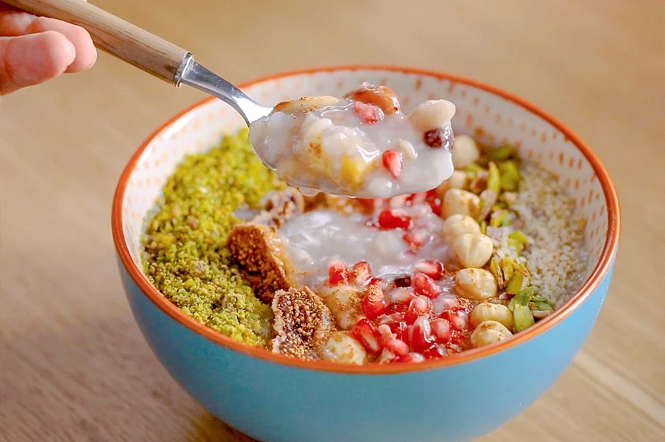

..::: Aşure :::..
"Aşure günü ne zaman?" diyenler... Enfes aşure tarifiniz, aşure günü gelmeden karşınızda! Bereketin ve
dayanışmanın sembolü olan ve buğdaydan, kuru incire kadar pek çok malzemeyle hazırlanan aşureyi paylaşmak
adettendir. Biz de bu adete aşure tarifini paylaşalım istedik.
Tarif: Yasemin Gürsürer

Aşure tarifi için gerekli malzemeler
- 250 gram buğday (1,5 su bardağı)
- 4,5 litre sıcak su
- 100 gram pirinç (8 yemek kaşığı)
1 adet portakal kabuğu (küçük küpler halinde doğranmış)
1 adet limon kabuğu (küçük küpler halinde doğranmış)
2 adet orta boy elma (soyulmuş, küp doğranmış)
4 yemek kaşığı kuru üzüm
- 1 su bardağı kuru fasulye
1 su bardağı nohut
1/2 su bardağı çiğ badem
2 yemek kaşığı kuş üzümü
1 avuç fındık
- 1 avuç ceviz
10 adet kuru kayısı (doğranmış)
900 gram toz şeker (4,5 su bardağından 1 parmak fazla)
10 adet karanfil
1 su bardağı su (bir cezvede karanfil ile kaynatmak için)
Aşure nasıl yapılır
- Bol suyla iyice ovalayarak yıkadığınız 250 gram buğdayı derin ve geniş bir tencereye aktarın.
- Üzerine 1 litre sıcak su ekleyin ve kapağını yarım kapatıp kısık ateşte yarım saat pişmeye bırakın.
- Suyunu çeken buğdayın üzerine tekrar 1 litre su ekleyin ve 1 saat daha kısık ateşte buğdayı pişirmeye
devam edin.
- 1 saat sonunda 100 gram pirinç, 1'er adet portakal ve limon kabuğu ile birlikte 1,5 litre su daha
ekleyin ve ocağın altını kapatıp 3 saat oda sıcaklığında dinlenmeye bırakın.
- 3 saat oda sıcaklığında dinlenmiş olan karışıma 1 litre sıcak su ilave edin ve hemen ardından 2 adet
soyulmuş küp doğranmış elma ve 4 yemek kaşığı kuru üzümü ekleyip güzelce karıştırın.
- 1 su bardağı haşlanmış nohut ve 1 su bardağı haşlanmış kuru fasulyeyi de karışıma ekleyin ve koyduğunuz
malzemelerden sonra ara ara tahta kaşık ile karıştırmaya özen gösterin.
- 900 gram toz şekeri ve bir cezvede 10 adet karanfil ile kaynattığınız 1 su bardağı suyu da tencereye
ekledikten sonra kısık ateşte sürekli olarak karıştırarak yarım saat kadar pişirin. Ocağın altını
kapatıp, aşureyi yaklaşık 2 saat ılımaya bırakın. Tabii bu iki saat içinde aşurenizi ara ara
karıştırmayı ihmal etmeyin. Aşurenin kıvamı başta sulu olacaktır, bu konuda endişelenmeyin, zaman
geçtikçe koyulaşacak ve tam kıvamında olacaktır.
- Aşure ılındıktan sonra servis kaselerine kepçe yardımıyla aktarın.
- Kaselere bölüştürdüğünüz aşureleri Antep fıstığı, nar, susam, çiğ badem kuru incir gibi dilediğiniz
yemiş ve meyvelerle süsleyip, üzerine tarçın serpiştirebilirsiniz.
El emeği göz nuru aşurenizi çevrenizdekiler ve sevdiklerinizle paylaşmayı sakın ihmal etmeyin.
Afiyet olsun....